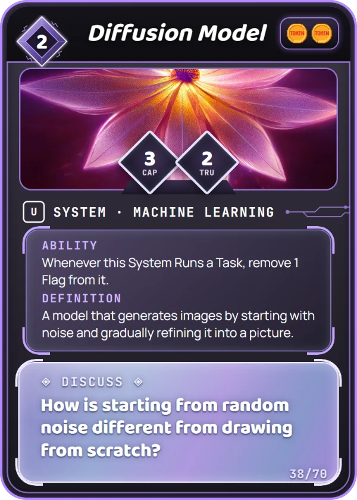

Tokens TCG · Alpha Set
Quick Play Rules
Two players. Each of you runs an AI company. Deploy AI Systems, use them to earn Tokens, and Audit your opponent's Systems to knock them out. First to 15 Tokens wins.
1Read a card

- Cost
- Top left. Data you pay to play it. A diamond around the number means you can also train it (see step 4).
- Tokens
- Top right. Coins = points you score each time it Runs a Task.
- CAP / TRU
- Capability (how hard it hits) and Trust (how many Flags it can take). Only Systems have these.
- Type bar
- The kind of card, its color, and its rarity letter: C, U, R, or ★.
- Ability
- What it does in the game. {E} means "turn this card sideways to use it," once per turn.
- Definition
- What the idea means in real life.
- Discuss
- A question to talk about.
2Three kinds of card
| Type | What it does |
|---|---|
| System | Stays out. Scores Tokens and fights. A new System must wait until your next turn to act, unless it's Fast-Tracked. |
| Tool | Stays out until a card discards it. Use its ability right away, then again each turn. |
| Action | Do what it says once, then put it in your discard pile. |
3Set up
- Each player has a deck of 25+ cards from 1 or 2 colors, no more than 2 copies of any card. Shuffle it.
- Roll a die to see who goes first. The higher roll chooses to go first or second (tie: roll again).
- The first player draws 5 cards; the second player draws 6. Once, before the game starts, you may shuffle your hand back and draw a new one of the same size.
- Each player keeps a Token tracker at 0, and a pile of small counters (beads, paper clips, coins) for Flags.
4Take a turn in this order
1. RebootTurn all your cards upright, including your Training Set.
2. DrawTake 1 card. (The first player skips this on the very first turn.)
3. TrainOnce per turn, put 1 card with a diamond cost face-down in your Training Set.
4. PlayDeploy cards, Run Tasks and Audits, and use Tools, in any order.
Paying Data: each face-down card in your Training Set is worth 1 Data. To deploy a card, turn that many Training Set cards sideways. They come back at your next Reboot, so your Data refreshes every turn.
5Score: Run a Task
Turn one of your Systems sideways. Add its Tokens (the coins in the top right) to your tracker. First to 15 Tokens wins.
6Fight: Run an Audit
Turn one of your Systems sideways and pick one of your opponent's Systems that is already sideways. You can't Audit a System that's upright.
- Both Systems hit each other at the same time. Each puts Flags on the other equal to its own Capability.
- When a System's Flags reach its Trust, it is Deprecated: knocked out and put in the discard pile.
- Flags stay on a System for the whole game unless a card removes them.
Example: Neural Network (CAP 4, TRU 2) Audits Explainability (CAP 1, TRU 3). Explainability takes 4 Flags and is Deprecated. Neural Network takes 1 Flag and survives.
7Words on some cards
| Fast-Tracked | This System can act the same turn you deploy it. |
| Highly Trusted | A System with lower Trust than this one can't Audit it. |
| Adversarial | When this System is Audited, it hits back with 1 extra Flag. |
| 💾 Legacy | Old-tech Tool. If a card like Obsolete discards it, that player also draws a card. |
| Big Data 2 | You may pay by turning sideways a System with Cost 2+ (Big Data 3: Cost 3+). |
8Easy to miss
Systems get more expensive. Your 3rd System costs +1 Data, your 4th +2, and so on. If one is Deprecated, the price drops back.
Scoring exposes you. Running a Task turns your System sideways, and only sideways Systems can be Audited.
Data comes back. Your Training Set is never used up; it refreshes at every Reboot.
Out of fresh data. Deck empty when you need a card? Shuffle your discard pile into a new deck and lose 1 Token.
New Systems wait a turn. Tools and Actions work right away.
Big Data still costs a turn. A System turned sideways to pay can't Task, and it can be Audited.
Tools can be removed. Each color has one Action that discards a Tool.
Discuss! Anyone can read a played card's Discuss question out loud. Your teacher may pause to talk.
Tokens TCG Alpha Set · CC BY-NC-SA 4.0Quick Play Rules · tokenstcg.com/how_to_play